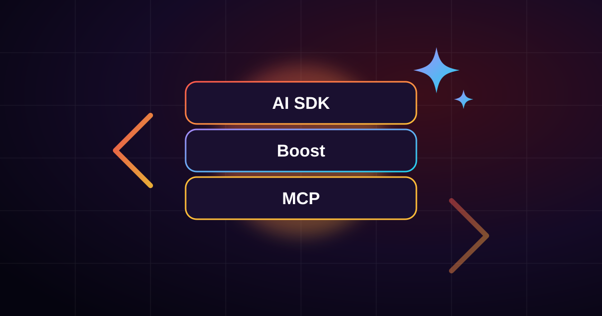

Laravel AI SDK, Boost & MCP: The New AI Toolkit for Laravel Developers

For years, adding AI to a Laravel app meant writing your own wrapper around a provider's HTTP API and hoping your coding assistant produced idiomatic Laravel instead of generic PHP. That has changed: Laravel now ships three first-party AI packages. They sound similar, but each one solves a different problem.
- Laravel AI SDK — build AI features into your app.
- Laravel Boost — help AI coding agents write better Laravel code for you.
- Laravel MCP — let external AI tools like ChatGPT or Claude use your app.
1. Laravel AI SDK: AI features your users touch
The AI SDK (laravel/ai) gives you one API for text
generation, structured output, images, audio, transcription and
embeddings across providers such as OpenAI, Anthropic, Google Gemini,
Groq and xAI. You set default providers once in
config/ai.php, and local models are supported through
Ollama.
composer require laravel/ai
php artisan vendor:publish --provider="Laravel\Ai\AiServiceProvider"
php artisan migrate
php artisan make:agent LeadQualifierThe core idea is the agent: a plain PHP class that holds the instructions, tools and output schema for one job. You can call it from a controller, a queued job or an event listener, and the logic lives in one place.
<?php
namespace App\Ai\Agents;
use Illuminate\Contracts\JsonSchema\JsonSchema;
use Laravel\Ai\Contracts\Agent;
use Laravel\Ai\Contracts\HasStructuredOutput;
use Laravel\Ai\Promptable;
class LeadQualifier implements Agent, HasStructuredOutput
{
use Promptable;
public function instructions(): string
{
return 'You qualify real-estate leads. Score buying intent from 0 to 100.';
}
public function schema(JsonSchema $schema): array
{
return [
'score' => $schema->integer()->required(),
];
}
}$response = (new LeadQualifier)->prompt($lead->notes);
$lead->update(['ai_score' => $response['score']]);A few features make it production-ready rather than a demo toy:
- Queues: call
queue()instead ofprompt()so users never wait on a slow model. - Streaming: push tokens to the browser over server-sent events for chat-style UIs.
- Embeddings: turn text into vectors, store them in Postgres with pgvector, and search them semantically.
- Failover: pass a list of providers and the SDK falls back to the next one when the first is rate-limited or down.
Where I'd use it in a CRM: scoring incoming leads, summarising long client conversations before a follow-up call, and semantic search across property notes ("3-bed near a metro, under budget") instead of rigid filters.
2. Laravel Boost: better code from your AI assistant
Boost is a developer tool, not an app feature. It is installed as a dev dependency, never touches production, and gives agents like Claude Code and Cursor two things they lack out of the box: context about your project, and up-to-date knowledge of the Laravel ecosystem.
- Guidelines loaded at the start of a session, so the agent follows Laravel conventions for the package versions you actually have installed.
- Agent skills that load on demand. For example, Livewire patterns load when you build a component, and Pest conventions load when you write tests.
- A documentation API with 17,000+ versioned entries, so the agent can look up a feature released last Tuesday instead of guessing from stale training data.
In practice, this means fewer invented methods and less time cleaning up the diff. If you only install one package from this post, make it Boost.
3. Laravel MCP: let AI tools use your app
The Model Context Protocol is an open standard that lets AI clients call external services in a structured way. Laravel MCP lets you build an MCP server inside your app, so a user in ChatGPT or Claude can say "create an invoice for Acme" and your validated Laravel code does the work.
composer require laravel/mcp
php artisan vendor:publish --tag=ai-routes
php artisan make:mcp-server CrmServer
php artisan make:mcp-tool FindLeadTool<?php
namespace App\Mcp\Tools;
use App\Models\Lead;
use Illuminate\Contracts\JsonSchema\JsonSchema;
use Laravel\Mcp\Request;
use Laravel\Mcp\Response;
use Laravel\Mcp\Server\Attributes\Description;
use Laravel\Mcp\Server\Tool;
#[Description('Finds a CRM lead by email address.')]
class FindLeadTool extends Tool
{
public function handle(Request $request): Response
{
$lead = Lead::where('email', $request->get('email'))->first();
return Response::text($lead
? "{$lead->name} — status: {$lead->status}"
: 'No lead found.');
}
public function schema(JsonSchema $schema): array
{
return [
'email' => $schema->string()->description('Lead email')->required(),
];
}
}// routes/ai.php
use App\Mcp\Servers\CrmServer;
use Laravel\Mcp\Facades\Mcp;
Mcp::web('/mcp/crm', CrmServer::class);Web-exposed servers support OAuth 2.1 through Laravel Passport and token authentication through Sanctum. Boost itself is built on this same library.
Which one do you need?
| Package | Who uses it | Use it when… |
|---|---|---|
| AI SDK | Your app and its users | You're shipping summaries, search, chat or generation inside the product. |
| Boost | You, the developer | You write Laravel with Claude Code, Cursor or a similar agent. |
| MCP | External AI clients | You want ChatGPT, Claude or Cursor to act inside your app. |
One practical warning: tool overload
Every tool you expose to a model is described to it on every message. Expose dozens, and you burn tokens and confuse the model.
You shouldn't have like 50, 60, 70 tools probably exposed to the LLM because you get what's called context bloat. — Taylor Otwell, creator of Laravel
Because tools are scoped per agent class in the AI SDK, keep each agent small and focused. A support agent gets search tools, and a lead scorer gets none.
Wrapping up
My recommended order: install Boost today to improve the code your assistant writes, add the AI SDK when you build your first AI feature, and reach for MCP once customers want to use your product from inside their AI chat. If you were using Prism directly, Laravel describes the AI SDK as a higher-level layer that replaces the need for it.
Sources
Want AI features in your Laravel app?
I build Laravel and Vue.js applications with practical AI built in: lead scoring, smart search, chatbots and automation.
Let's talk